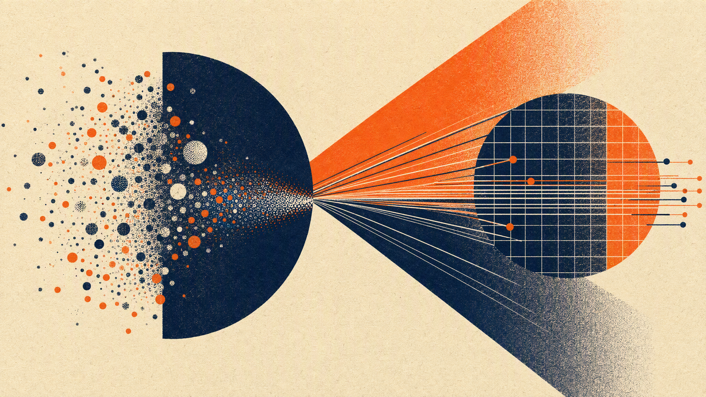
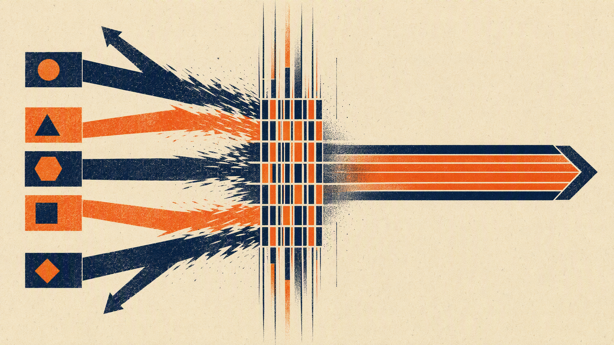
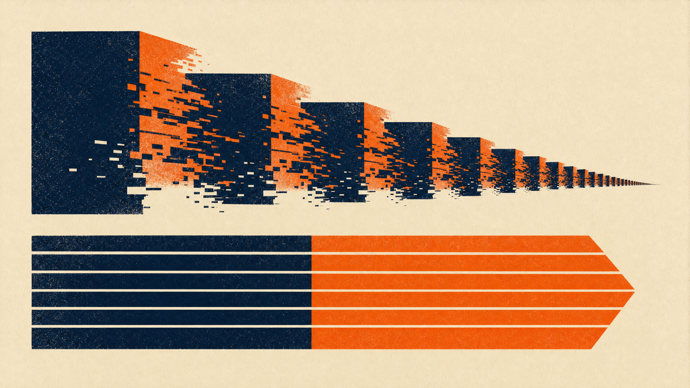
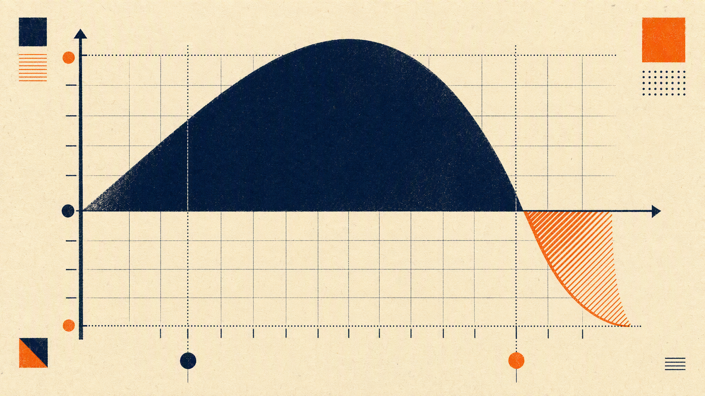
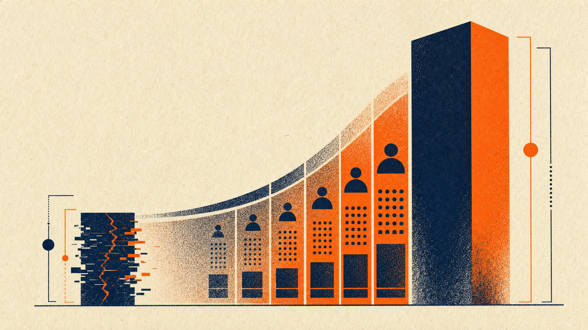

Executive Field Edition: The Five Crises Breakdown
Distilled for Chief Executives, Private Equity Operating Partners, and Board Directors. Review high-level takeaways below, or tap "Read More Insights" on any single crisis to expand the full empirical data and Customer Core operating remedy without leaving this page.
Organizations actively running AI pilots.
Report zero bottom-line margin expansion.
Annual lost productivity across silos.
Top 20% generate all corporate profit.
“AI does not fix a broken operating model. It automates whatever you feed it at machine speed. If your departments run on separate versions of the customer, you are just manufacturing confusion faster and paying more to do it.
The fix is not buying another model. It is establishing one authoritative customer record that every function and every algorithm shares before automation begins.”
Enterprise leadership faces a billion-dollar paradox: 88% of organizations are actively deploying artificial intelligence, yet 81% report zero measurable bottom-line EBITDA gain (McKinsey 2026). Capital is pouring into foundation models, but returns remain trapped in isolated pilots.
This breakdown occurs because of the Amplification Paradox: machine-speed algorithms do not fix bad data or fragmented customer records. They automate confusion and accelerate operational errors at compute velocity.

Modern enterprises operate as loose federations of hostile fiefdoms: Marketing, Sales, Customer Service, Operations, and IT. Each department optimizes local bonus metrics while destroying collective customer lifetime value.
This functional balkanization generates an estimated $1.8 trillion annual productivity drag across the enterprise economy, consuming 40% to 65% of executive management time simply trying to reconcile contradictory spreadsheets.

Corporate transformations exhibit an established failure rate: 70% to 84% fail to hit their financial objectives (McKinsey, BCG, Bain). The primary culprit is the 57-month linear waterfall roadmap.
Building enterprise systems sequentially requires 5 or more years. By the time lower layers finish, key executives have turned over (average C-suite tenure is 3.5 years), business priorities have shifted, and the technology is obsolete.

In almost every large firm, the top 20% of customer accounts generate 120% of net operating profit. The middle 60% break even, while the bottom 20% actively destroy 20% to 30% of enterprise earnings due to excessive discounting and support overhead.
Despite this reality, only 30% of companies dynamically reallocate capital away from toxic customer segments (McKinsey 2026), continuing to deploy marketing and operational resources uniformly across their base.

Public equity markets and institutional private equity acquirers penalize earnings opacity. Companies with unforecastable customer revenue, volatile churn, and un-audited cohort dynamics trade at a 30% to 50% valuation discount relative to peers with high earnings predictability.
Traditional accounting looks backward. When CFOs cannot defend cohort retention and forward customer cash flows, investors price the resulting risk into depressed EBITDA exit multiples.

---
Executive Summary: The Structural Pathology of the Modern Firm
Enterprise leadership faces a fundamental architectural disconnect. Across the Fortune 500 and mid-market private equity portfolios, organizations are deploying unprecedented capital into artificial intelligence, cloud data platforms, and automated workflow engines. Yet the financial return on these investments remains overwhelmingly negative or unmeasurable.
“AI does not fix a broken operating model. It automates whatever you feed it at machine speed. If your departments run on separate versions of the customer, you are just manufacturing confusion faster and paying more to do it.
The fix is not buying another model. It is establishing one authoritative customer record that every function and every algorithm shares before automation begins.”
This condition does not reflect a failure of algorithmic capability. It reflects an architectural mismatch: the attempt to deploy twenty-first-century generative and agentic technologies on top of twentieth-century product-centric, siloed organizational structures.
When an enterprise introduces machine-speed AI into an uncoordinated operating model, it does not fix fragmented records: it automates confusion at compute velocity.
Modern enterprises face five interrelated structural crises that erode enterprise value, stall digital modernization, and depress valuation multiples:
1. The AI Implementation Crisis: 88% of organizations are actively deploying artificial intelligence, yet 81% report zero measurable bottom-line financial impact. Billions in capital expenditure produce localized science projects rather than enterprise cash flow. 2. The Silo Cost Crisis: Departmental fragmentation creates an estimated $1.8 trillion annual productivity drag across modern enterprises. Vertical silos optimize localized metrics at the direct expense of enterprise customer lifetime value. 3. The Transformation Failure Crisis: 70% to 84% of digital transformation initiatives fail to achieve their stated objectives. Traditional sequential programs require 57 or more months, causing strategic decay before completion. 4. The Equity Misallocation Crisis: The top 20% of customer accounts generate 80% of operating profits while the bottom 20% actively destroy economic value. Enterprises continue to deploy capital and operating expense uniformly across their customer base. 5. The Valuation Discount Crisis: Public markets and private equity buyers apply a 30% to 50% valuation discount to companies with unforecastable customer revenue and opaque customer retention dynamics.
These five crises describe what is broken inside the modern enterprise. The Four Convergence Realities describe why leadership must resolve them immediately. When artificial intelligence meets a fractured enterprise architecture, it does not heal the organization. It accelerates the dysfunction.
---
Crisis 1: The AI Implementation Crisis
The Empirical Reality of the Deployment Gap
Enterprise investment in artificial intelligence has reached historic levels, yet the conversion of that investment into operating margin has decoupled.
McKinsey & Company's global organizational study (The State of Organizations 2026, surveying 10,018 senior executives across 15 countries and 16 industries) establishes the scale of this breakdown: * 88% of organizations are actively experimenting with or deploying artificial intelligence. * 81% report no meaningful bottom-line financial impact from their AI investments. * 86% of executive leaders state their organizations are not prepared to adopt AI in day-to-day operations. * Only 1% of United States C-suite respondents describe their generative AI rollouts as mature. * Only 19% report AI-accelerated revenue growth exceeding 5%.
Organizations actively experimenting with or deploying AI tools.
Enterprises reporting zero measurable EBITDA margin expansion from AI.
Executive leaders stating their organizations are unready for day-to-day AI operations.
United States C-suite respondents describing their generative AI stack as mature.
This dynamic is replicated across corporate finance functions. Deloitte's Finance Trends 2026 survey of more than 1,300 finance leaders reveals that only 21% of finance departments actively utilizing AI report clear, measurable value delivery. Simultaneously, Deloitte's State of AI in the Enterprise (8th Edition, 2026) reveals a severe 64-point governance gap: 85% of enterprise leaders plan to deploy customized autonomous agents within 12 months, yet only 21% possess mature agent governance frameworks.
Gartner research confirms the operational consequence: 60% of enterprise AI projects will be abandoned through 2026 due to the absence of AI-ready data infrastructure. Furthermore, 63% of organizations lack the data management and identity resolution practices required to support autonomous inference.
The Amplification Paradox
The root cause of AI implementation failure is the "AI-first" fallacy: purchasing software tools, foundation model access, and specialized compute before establishing the governed data architecture and operating logic.
When an enterprise introduces machine-speed automation into an uncoordinated operating model, it triggers the Amplification Paradox:
$$\text{Dysfunction}_{\text{Automated}} = \text{Dysfunction}_{\text{Base}} \times \text{Velocity}_{\text{AI}}$$
Artificial intelligence does not remediate bad data, contradictory metrics, or fragmented customer records. It amplifies them. It generates hallucinated customer interactions, automates contradictory customer messaging across departments, and burns compute budget generating conflicting analytical outputs.
Longitudinal tracking from KPMG (AI Quarterly Pulse Survey, Q4 2025, tracking 130 C-suite leaders at $1B+ revenue enterprises) demonstrates this exact dynamic in practice. Enterprise agent deployment rose rapidly from 11% in Q1 2025 to 37% in Q2 and peaked at 42% in Q3. In Q4 2025, deployment dropped 16 percentage points down to 26%. Enterprise leaders were forced to pull back active deployments because 65% encountered insurmountable agentic complexity and 82% ran into severe data quality barriers.
The Architectural Solution
The Customer Core™ framework resolves the AI Implementation Crisis by enforcing a strict foundation-first discipline through Levels 1, 2, and 3:
* Level 1 (Data Foundation): Enforces a mandatory 70% data quality threshold across completeness, freshness, and accuracy before downstream automation is permitted. * Level 2 (Identity Resolution): Reconciles disparate account entities into a single, deterministic customer profile, preventing conflicting analytical models. * Level 3 (Customer Intelligence): Establishes governed predictive features (churn likelihood, expansion propensity, cost-to-serve) that supply context-grounded inputs to autonomous agents.
---
Crisis 2: The Silo Cost Crisis
The Anatomy of the $1.8 Trillion Productivity Drag
Modern corporations remain structured around functional specialization: Marketing, Sales, Customer Success, Professional Services, Operations, and Finance. Each department operates its own software stack, maintains its own data store, and optimizes its own localized key performance indicators.
This functional balkanization generates an estimated $1.8 trillion annual productivity drag across the enterprise economy (HubSpot Workforce Productivity Research; E013 Practitioner Synthesis).
Five isolated departments pull in conflicting diagonal directions. Each optimizes local bonuses while destroying collective customer equity.
| Department | Local Optimization Goal | Systemic Enterprise Damage |
|---|---|---|
| Marketing | Maximize Lead Volume & Minimize CPL | Delivers low-intent leads to Sales; inflates blended customer acquisition cost. |
| Sales | Maximize Bookings & Quarterly Quota | Discounts terms and promises custom engineering; triggers downstream delivery churn. |
| Customer Service | Minimize Average Handle Time (AHT) | Prematurely ends calls; accelerates account churn among high-equity clients. |
| Operations | Minimize Unit Service Cost | Standardizes delivery; degrades service quality for top-tier enterprise accounts. |
| Information Tech | Minimize SaaS License Expense | Restricts cross-departmental API data pipelines required for customer intelligence. |
McKinsey's State of Organizations 2026 confirms the internal friction created by these vertical walls: * Two-thirds (67%) of senior executives state their organizations are overly complex and inefficient. * 40% to 65% of management time is consumed by cross-functional review meetings attempting to resolve silo misalignment. * 35% of critical business decisions are duplicated or contradicted across separate functions. * Internal reporting requires over 1,000 manual hours per month in typical mid-to-large enterprises simply to reconcile contradictory departmental spreadsheets.
The Mechanism of Local Sub-Optimization
When individual departments optimize their local efficiency, the enterprise as a whole loses value.
For example, a marketing department incentivized purely on Cost Per Acquisition (CPA) will aggressively acquire low-margin, high-churn customers. The sales team, compensated on total contract value (TCV) regardless of gross margin, books customized terms that operational teams cannot deliver profitably. Customer support, evaluated on Average Handle Time (AHT), terminates client calls rapidly, driving dissatisfaction among the firm's most lucrative enterprise accounts.
Every department hits its quarterly bonus targets while enterprise EBITDA and net revenue retention (NRR) decline.
The Architectural Solution
Customer Core™ replaces ad-hoc inter-departmental negotiations with a unified horizontal governance layer:
* The Value Council: A cross-functional governance body with supreme decision authority over customer portfolio investments, overriding individual departmental vetoes. * The Unified Customer Ledger: A single mathematical record of truth that attributes revenue, cost-to-serve, and margin contributions to individual customer cohorts rather than departmental budgets. * Mathematical Constraint Equations: Formulaic allocation models that prevent any department from expanding expenditure unless the investment produces measurable enterprise customer equity expansion.
---
Crisis 3: The Transformation Failure Crisis
The Historical Failure Rate of Enterprise Modernization
Over the past decade, global enterprises have invested more than $2.3 trillion annually in digital transformation initiatives. Despite this massive expenditure, academic and management research (McKinsey, BCG, Bain, and Standish Group longitudinal studies) demonstrates that 70% to 84% of corporate transformations fail to achieve their stated financial or operational goals.
Sequential waterfall transformations average 57+ months, ensuring executive turnover and obsolescence. Constrained Parallelism compresses delivery to 24-36 months.
The underlying cause of this chronic failure is structural. Organizations consistently trap themselves in one of two flawed execution paradigms:
Building Level 1 to 100% before initiating Level 2 guarantees a 5-year timeline. Executive turnover (average tenure 3.5 years) strands millions in un-capitalized code.
Launching all 7 levels simultaneously without gating. Advanced AI agents execute flawed business logic built on un-reconciled data records.
Work across all seven layers begins on Day 1, bounded by the strict invariant: (Maximum Layer Maturity = Verified Lower Layer Maturity × 70%). Compresses delivery from 57 months to 24-36 months.
The 57-Month Sequential Lag
In the traditional sequential transformation model, an enterprise attempts to perfect each technical layer before initiating the next: 1. Enterprise Data Warehouse & Lakehouse (Months 1 to 18) 2. Master Data Management & Identity Resolution (Months 19 to 30) 3. Advanced Predictive Analytics (Months 31 to 42) 4. Workflow Automation & AI Engine (Months 43 to 50) 5. Customer Experience & Front-Office Execution (Months 51 to 57+)
This 57-month timeline is lethal in modern markets. During a five-year execution cycle: * Average corporate C-suite tenure is 3.5 years (the executive who funded the project departs before value realization). * Market conditions and technological architectures fundamentally evolve. * Strategic clarity decays rapidly across organizational tiers. As quantified in McKinsey's 2026 data, strategic clarity drops from 56% among top executives to 44% among senior managers, collapsing to just 27% at the middle-management level. * The Board of Directors develops transformation fatigue and cancels funding during month 24, stranding millions in un-capitalized infrastructure.
The Architectural Solution: Constrained Parallelism
Customer Core™ resolves the transformation dilemma through Constrained Parallelism, governed by a strict mathematical maturity gating formula.
Instead of waiting for Level 1 to reach 100% completion before initiating Level 2, work begins across all seven levels simultaneously on Day 1. However, the maximum allowable maturity of any given level is mathematically constrained by the verified maturity of the foundational level beneath it:
By enforcing the 70% Maturity Threshold, no upper layer is permitted to over-engineer capabilities that the underlying data foundation cannot support. This mechanism compresses the total transformation timeline from 57+ months down to 24-36 months while eliminating the systemic risk of uncoordinated execution.
---
Crisis 4: The Equity Misallocation Crisis
The Hidden Skew of Customer Profitability
Enterprise marketing, sales, and service budgets are routinely allocated using arbitrary, undifferentiated methods (the "peanut-butter approach"). Budgets are spread evenly across accounts, sales territories are drawn purely by geographic boundaries, and customer support service levels are dictated by legacy product tiers rather than customer economic value.
Empirical research across B2B and enterprise portfolios reveals extreme profitability skew:
| Customer Segment | Share of Accounts | Share of Operating Profit Generated |
|---|---|---|
| Top Tier (Lucrative) | Top 20% | +80% to +120% of total net operating profit |
| Middle Tier (Neutral) | Middle 60% | Breakeven (0% to +10% net operating profit) |
| Bottom Tier (Toxic) | Bottom 20% | -20% to -30% (Destroys enterprise profit) |
In almost every large enterprise, a small cohort of highly engaged, low-friction customers generates more than 100% of the company's net operating income. Simultaneously, the bottom 20% of customer accounts actively destroy value because their bespoke operational demands, constant support overhead, and excessive discounting exceed their gross margin contribution.
Top 20% of customers generate 120% of net operating profit, while bottom 20% toxic accounts silently destroy 20% to 30% of enterprise earnings.
The Inertia of Resource Misallocation
Despite this economic reality, corporate resource allocation remains blind to customer equity. Enterprises spend equal sums to acquire and service toxic, low-tier accounts as they do to defend their top-tier relationships.
McKinsey's State of Organizations 2026 highlights this systemic inertia: * Only 30% of organizations dynamically reallocate capital and operational resources across business units and customer segments on an ongoing basis. * The primary barriers to rational resource reallocation are departmental protectionism (41%), broken governance decision processes (38%), and executive hesitation (32%).
When marketing targets lead volume rather than customer lifetime value (CLV), the acquisition engine aggressively imports unprofitable accounts. Service teams burn overtime resolving low-value tickets while high-equity accounts experience generic, delayed support, increasing churn risk among the firm's core cash generators.
The Architectural Solution: Customer Equity Portfolio Optimization
Level 6 of Customer Core™ (Customer Equity & Portfolio Management) replaces guesswork with mathematical portfolio governance:
* Customer Lifetime Value (CLV) Calculation: Calculates the net present value (NPV) of future cash flows for every account, incorporating deterministic churn probabilities and empirical cost-to-serve data:
$$\text{CLV}_i = \sum_{t=0}^{T} \frac{(R_{i,t} - C_{i,t}) \cdot P(\text{Retention}_{i,t})}{(1 + d)^t}$$
* Dynamic Capital Reallocation: Shifts 20% to 30% of sales, marketing, and service expenditure away from value-destroying tiers and re-invests directly into top-tier customer expansion and defensive retention. * Economic Value Realization: In enterprise implementations, this systematic reallocation generates $8 million to $12 million in annual recurring EBITDA improvement for mid-market and enterprise firms without requiring an increase in total operating budget.
---
Crisis 5: The Valuation Discount Crisis
The Market Penalty for Unpredictable Revenue
Public equity markets and institutional private equity sponsors penalize uncertainty. Companies exhibiting erratic revenue growth, volatile customer churn, and unpredictable sales pipelines trade at a 30% to 50% valuation discount relative to peers with high earnings predictability.
Volatile churn forces private equity acquirers to discount multiples by 30% to 50%. Audited CBCV retention metrics expand multiples from 7x to 15x-18x.
Traditional financial forecasting relies on lagging accounting indicators and subjective sales pipeline stages: * Historical quarterly revenue run-rates (backward-looking). * Subjective CRM sales pipeline stages (notoriously inaccurate). * Macroeconomic industry growth assumptions (decoupled from customer cohort dynamics).
None of these legacy approaches model forward cash flows based on actual customer behavior. Consequently, CFOs struggle to forecast performance beyond 90 days, boards cannot defend long-term earnings durability, and investors price the resulting risk into depressed valuation multiples.
Customer-Based Corporate Valuation (CBCV)
The academic foundation of Customer-Based Corporate Valuation (pioneered by Peter Fader, Bruce Hardie, and Daniel McCarthy) proves that the market capitalization of an enterprise is the direct sum of the discounted cash flows generated by its existing and future customer cohorts:
When an enterprise cannot track cohort retention, expansion velocity, or customer-level margins, the capital markets classify its revenue as low-quality. A company generating $100 million in revenue with 25% annual customer churn and zero cohort transparency will trade at a massive discount compared to a firm generating identical revenue with 115% Net Revenue Retention and predictable cohort expansion.
The Architectural Solution: Earnings Quality & Valuation Premium
Level 7 of Customer Core™ (Earnings Quality & Investor Confidence) bridges customer behavioral data directly into corporate financial reporting:
* Cohort Retention Telemetry: Implements automated, auditable tracking of customer retention, expansion, and margin contribution across monthly acquisition vintages. * Earnings Quality Scorecard (EQS): Supplies institutional investors, lenders, and rating agencies with auditable proof of revenue durability, churn mitigation, and pricing power. * Valuation Multiple Expansion: By converting volatile transactional revenue into predictable, customer-equity-backed cash flows, organizations command 1.5x to 2.5x multiple expansion, adding tens to hundreds of millions of dollars in enterprise value upon liquidity or recapitalization.
---
The Common Root: Moving from Pathology to Sovereign Agency
Read separately, the five crises describe five different problems and imply five different budgets. Read together, they describe one.
Every pathology above is a downstream expression of a single physical reality: the enterprise has no authoritative version of the customer. Silos are that reality at rest. The amplification paradox is that reality under acceleration. The lag is that reality serialized. The misallocation is that reality priced. The multiple discount is that reality discovered by a buyer.
This is the intellectually honest reason for optimism: the physical coupling that propagates a bad customer record across five departments in an afternoon is the exact same machinery that will propagate an authoritative one.
The machinery is not the defect; the un-governed input is. Fix the input, and the identical infrastructure that previously accelerated confusion begins manufacturing predictable balance-sheet earnings at scale.
What Must Become True: The State Transition Grid
Before an organization can capture earnings from automation, five falsifiable operational conditions must be established:
| The Diagnostic Pathology | What Must Become True | Where Built in Stack |
|---|---|---|
| 1. Silo Friction | The same question about customer health, asked of any two departments on the same day, returns one identical answer. | Levels 1 to 2 Data & Identity |
| 2. Amplification Paradox | No autonomous agent or predictive algorithm reaches a customer through an evidence path that cannot be audited. | Level 3 Governed Features |
| 3. The 57-Month Lag | Work streams run concurrently against a shared canonical record instead of sequentially against private departmental roadmaps. | Level 4 Process Automation |
| 4. 80/20 Misallocation | Every account carries a single cost-to-serve and net profitability figure that Finance and Revenue both sign. | Levels 5 to 6 Equity Allocation |
| 5. Valuation Discount | Buyer technical and commercial diligence on the customer portfolio closes without a churn remediation holdback. | Level 7 Valuation Accretion |
Hope with no stated cost is a pitch. Establishing a sovereign operating architecture requires tangible institutional commitments:
- Surrendered Departmental Autonomy: Functional leaders must relinquish private shadow databases and agree to cross-functional Value Council oversight.
- Temporary Reporting Friction: During the initial 16-day diagnostic and subsequent 90-day phase one reconciliation, vanity pipeline metrics decline before clean cohort figures emerge.
- Executive Ownership: The initiative cannot be delegated to IT; it must be sponsored directly by the CEO or PE Operating Partner.
The Customer Core™ Seven-Level Sovereign Solution
To resolve the Five Crises, modern enterprises must stop purchasing superficial AI point-solutions and instead deploy a single sovereign operating architecture. Customer Core™ establishes an immutable single-source-of-truth operating spine linking foundational data quality directly to private equity valuation multiple expansion.
Tier-by-Tier Architectural Deconstruction
Each layer of the Customer Core™ architecture supplies verified mathematical inputs to the level above, governed by the 70% Constrained Parallelism maturity gate:
Links day-to-day commercial operations and cohort retention directly to Customer-Based Corporate Valuation (CBCV) mathematical telemetry, defending against the 30% to 50% private equity valuation discount.
Algorithmic Whale Curve optimization that dynamically reallocates 20% to 30% of sales and engineering capital away from value-destroying bottom accounts directly into defending and expanding the top 20% lucrative core.
Closed-loop multi-agent experience orchestration ensuring that pricing, packaging, onboarding, and support interactions execute without conflicting messaging across touchpoints.
Cross-functional workflow engines replacing fragmented departmental handoffs and manual spreadsheet reconciliations. Governed by an executive Value Council aligning departmental bonuses with enterprise CLV.
Context-grounded feature stores supplying real-time churn propensity, expansion probability, and empirical cost-to-serve metrics to autonomous agents, eliminating hallucinated decisions.
Single immutable customer identity graph reconciling fragmented records across CRM, ERP, billing, and support tools, eradicating duplicate accounts and cross-functional blind spots.
Enforces automated data validation rules across completeness, freshness, and schema consistency, halting downstream automation until foundational data passes strict quality thresholds.
Master Crisis-to-Remedy Convergence Matrix
| Enterprise Crisis | Structural Cause | Customer Core™ Solution & Yield |
|---|---|---|
| 1. AI Implementation Crisis | Deploying models on un-governed, dirty silo records. | Levels 1-3 Data & Identity Rigor: 70%+ quality gate halts machine-speed error acceleration. |
| 2. Silo Cost Crisis ($1.8T Drag) | Isolated department tools and conflicting quarterly KPIs. | Level 4 Value Council Governance: Canonical ledger aligns incentives directly with CLV. |
| 3. Transformation Failure Crisis | 57+ month waterfall roadmaps causing strategic obsolescence. | Constrained Parallelism: Synchronized execution compresses delivery down to 24-36 months. |
| 4. Equity Misallocation Crisis | Peanut-butter uniform resource allocation across customer base. | Level 6 Portfolio Optimization: Recovers $8M-$12M in recurring annual EBITDA lift. |
| 5. Valuation Discount Crisis | Unpredictable churn and opaque revenue quality. | Level 7 CBCV Reporting: Unlocks 1.5x to 2.5x EV/EBITDA multiple expansion. |
How Magruder & Company Deploys the Sovereign Operating Remedy
We do not deploy armies of junior consultants or bill open-ended hourly retainers. Magruder & Company operates on an outcome-bound, single-principal model:
- Milestone-Gated Diagnostic Review: High-velocity diagnostic completed in 16 labor days bounded under corporate procurement limits.
- Living Architectural Blueprints: Delivers executable Customer Core™ mathematical gates, identity entity schemas, and Whale Curve portfolio reallocations.
- Direct Balance-Sheet Alignment: All deliverables are mapped directly to EBITDA accretion and private equity multiple defense.
Resolve the Five Crises in Your Portfolio
Magruder & Company deploys high-velocity, single-principal diagnostics bounded under corporate procurement limits to establish deterministic Customer Core™ operating foundations before capital waste compounds.
Initiate Diagnostic Review